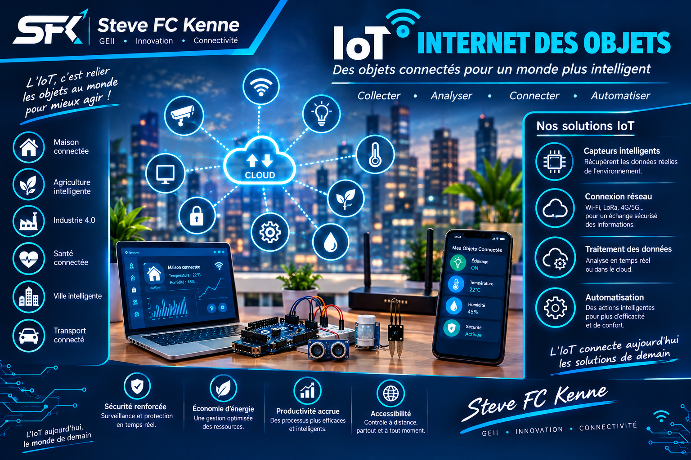

PROJET 03 · IoT & AUTOMATISATION
IoT & automatisation
Des systèmes connectés capables d'acquérir des informations, de les transmettre et de commander différents équipements.

Présentation du projet
Ce domaine regroupe la conception de systèmes capables de communiquer avec leur environnement grâce à différents capteurs et interfaces de communication.
Les données peuvent être acquises, traitées puis utilisées pour déclencher automatiquement certaines actions.
Technologies
- Arduino
- ESP32
- Capteurs
- Wi-Fi
- Communication de données
- Automatisation
- Interfaces de commande
Objectif
Concevoir des systèmes capables de mesurer, communiquer et agir automatiquement afin d'améliorer le contrôle et la supervision des équipements.